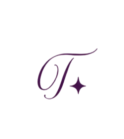

Volta para Si
Uma jornada para quem cansou de viver a mesma história.
Componente .tm-hero — abertura de qualquer peça: slide 1 de carrossel, topo de landing page, capa de e-book.
Sumário
Dezoito capítulos — da essência da marca ao componente de rodapé. Na primeira leitura, siga a ordem.
- 01 Essência da marca
- 02 Posicionamento
- 03 Tom de voz
- 04 Identidade visual — cor
- 05 Identidade visual — tipografia
- 06 Identidade visual — logo
- 07 Direção de arte
- 08 Componente — texto & frase de impacto
- 09 Componente — citação & feedback
- 10 Componente — fotografia
- 11 Componente — CTA & investimento
- 12 Componente — blocos de estrutura
- 13 Componente — divisória, assinatura & rodapé
- 14 Aplicação por formato
- 15 Hierarquia visual
- 16 Formatos (canvases)
- 17 Experiência
- 18 Checklist
01 · Essência da marca
A base de onde vem toda decisão de tom, imagem e layout deste manual.
Tessy Martins trabalha na fronteira entre o simbólico e o prático: usa o Tarô como ferramenta terapêutica, apoiada pela Metodologia oficial Heal Your Life®, de Louise Hay, para ajudar mulheres a nomear padrões que se repetem — e a sair deles com clareza, não com fórmula pronta.
A marca existe para devolver seriedade e sofisticação a um universo tratado, com frequência, como espetáculo. Aqui, o Tarô não prevê: ele revela o que já está acontecendo.
Devolver a você a clareza que a sua história perdeu pelo caminho.
- Calma — nunca urgência
- Confiança — nunca autoridade imposta
- Sofisticação — nunca ostentação
- Sair do piloto automático de um padrão repetido
- Trocar "o que fazer?" por "o que isso revela?"
- Voltar a se ouvir antes de decidir
- Identificação — "isso é sobre mim"
- Alívio — "eu não sou a única"
- Coragem quieta — sem euforia, sem milagre
02 · Posicionamento
O que diferencia a marca, para quem ela fala — e, com a mesma clareza, para quem ela não fala.
A combinação de Tarô terapêutico com a Metodologia oficial Heal Your Life® dentro de uma estética editorial — não de linguagem de coach nem de misticismo decorativo. Tessy não compete por quem "acerta mais" uma leitura; compete por quem entrega mais profundidade e mais silêncio por sessão.
Como uma editora de bem-estar, não como uma vidente. Perto de Aesop e Kinfolk — longe de balcão de feira esotérica.
É o público
- Mulheres em transição — de carreira, relação ou fase de vida
- Já passaram por terapia ou desenvolvimento pessoal antes
- Valorizam estética e cuidam de como consomem conteúdo
- Querem entender a raiz, não só aliviar o sintoma
Não é o público
- Quem busca previsão de futuro como entretenimento
- Quem quer resposta rápida do tipo "vai dar tudo certo"
- Quem procura estética mística caricata (cristal, incenso, neon)
- Quem busca o "hype" de um coach de motivação
03 · Tom de voz
Frases curtas. Silêncio entre elas. Nenhuma palavra a mais do que o necessário.
Como escrevemos
- Frases curtas, com espaço para respirar entre elas
- Perguntas retóricas usadas com moderação, para gerar identificação
- Afirmações diretas, sem jargão espiritual
- Primeira pessoa quando for genuíno, nunca por padrão
Como não escrevemos
- Caixa alta gritada ou excesso de exclamação
- Urgência de vendas ("vagas limitadas!", "só hoje!")
- Jargão de coach genérico ("mindset", "propósito de vida")
- Promessa de prever o futuro com exatidão
E se o problema nunca tivesse sido a sua força?
🔮✨ Descubra seu propósito de vida com o Tarô! Vagas limitadas, corre lá!!! 💜🌙
04 · Identidade visual — cor
Fundo dominante em off-white. Lilás, oliva e dourado são acentos — nunca preenchem uma área grande sozinhos.
05 · Identidade visual — tipografia
Cormorant Garamond (serif editorial) + Karla (sans humanista) + Allura reservada a uma única palavra por página.
06 · Logo
O monograma é a assinatura da marca — sempre como veio, nunca "ajustado" para combinar com uma peça específica.

A área tracejada é a proteção mínima: nada — texto, foto, borda de outro elemento — pode entrar nesse espaço.
O monograma é reproduzido em um único tom — um plum profundo, mais escuro que o lilás de apoio do sistema. É proposital: o logo é a assinatura, não um bloco de cor do layout, e por isso carrega seu próprio tom fixo, nunca substituído pelas cores de apoio da página.
Abaixo desses limites o brilho de quatro pontas perde nitidez — nesse caso, use o nome completo em tipografia (assinatura) em vez do monograma.
As duas últimas são pré-visualizações por filtro, só para referência. Para produção, peça ao designer os arquivos vetoriais definitivos nessas versões — não gere-as por filtro em uma peça final.
Este selo pertence ao programa oficial Heal Your Life® (Louise Hay / Hay House) — não é um ativo da marca Tessy Martins e não deve ser tratado como logo principal de nenhuma peça.
- Nunca recolorir, distorcer ou combinar visualmente com o monograma
- Usar apenas como selo de credencial, próximo a um texto ("Coach certificada Heal Your Life®")
- Reproduzir no tamanho e formato fornecidos pelo licenciante
07 · Direção de arte
Guia para quem fotografa ou trata imagem para a marca — antes de olhar para o componente .tm-photo-* logo abaixo.
- Lifestyle editorial — mulher em momento contemplativo, nunca posada para a câmera
- Nunca olhando para a lente; nunca sorriso exagerado
- Planos abertos, com respiro ao redor do corpo — evitar close agressivo de rosto
- Preferir perfil, mãos, costas, detalhes, a rosto de frente
- Regra dos terços, nunca centralizar o assunto por padrão
- Sempre luz natural — janela, hora dourada; nunca flash direto ou estúdio duro
- Contraste baixo-médio, cor sóbria; nunca preset saturado ou HDR
- Grain discreto é bem-vindo; filtro vibrante não
- Texturas: linho, papel, madeira clara, vidro, flor seca
- Evitar: tecido brilhante, plástico, neon, glitter
Usar como termômetro de sofisticação, nunca como fonte para copiar composição, still ou paleta ao pé da letra.
08 · Texto editorial & frase de impacto
Parágrafo corrido com largura de leitura controlada; frase de impacto isolada, com muito ar ao redor.
No fim das contas, o que a Metodologia Heal Your Life® ensina é simples: os padrões que repetimos vêm de crenças que aprendemos cedo demais para questionar. O Tarô terapêutico não prevê o futuro — ele nomeia o que já está acontecendo dentro de você, para que a mudança deixe de ser um mistério.
E isso vale para qualquer transformação real: exige consistência, clareza e coragem — não uma virada de chave.
Crescer exige consistência, clareza e coragem.
09 · Citação & feedback
Citação: fala atribuída, filete dourado à esquerda. Feedback: depoimento tratado como texto, nunca como selo de prova social.
Cada pensamento que temos cria o nosso futuro.Louise Hay
Eu não sabia que era possível sentir tanta clareza depois de uma única sessão.
10 · Fotografia
Sempre lifestyle, luz natural, mulher em momento contemplativo — nunca olhando para a câmera. As áreas tonais abaixo substituem a fotografia real apenas nesta especificação.
11 · CTA & investimento
O CTA é um link sublinhado, nunca um botão preenchido e arredondado. O card de investimento apresenta a oferta com contenção.
Tarô terapêutico e Metodologia Heal Your Life®, em encontros quinzenais de 90 minutos.
Agendar conversa inicial →12 · Blocos de estrutura
Benefícios, depoimento em card, lista elegante e bloco de metodologia — todos sem ícones, apenas tipografia e fio.
Você entende, com precisão, o padrão que se repete — sem julgamento.
Um espaço sem pressa, sem fórmula pronta, no seu tempo.
Cada sessão constrói sobre a anterior — não são leituras avulsas.
Voltar para mim mesma deixou de ser uma frase bonita e virou uma prática real.
- 4 sessões individuais de 90 minutos
- Leitura de Tarô terapêutico a cada encontro
- Material de apoio da Metodologia Heal Your Life®
- Acompanhamento por WhatsApp entre sessões
Uma conversa inicial para entender onde a história está travada.
O Tarô terapêutico nomeia o padrão — sem prever, sem assustar.
Identificamos a crença de origem, à luz da Metodologia Heal Your Life®.
Um passo concreto para praticar até o próximo encontro.
13 · Divisória, assinatura & rodapé
Como qualquer peça se fecha: um fio, uma assinatura, um rodapé — nunca os três competindo por atenção ao mesmo tempo.
14 · Aplicação por formato
Os mesmos componentes acima, orientados por tipo de material. Nenhum formato ganha um componente novo — só uma combinação diferente dos já existentes.
Carrossel
.tm-canvas--instagram · 1080×1350Slide 1 usa .tm-hero ou .tm-statement. Slides intermediários: .tm-editorial-text, .tm-quote ou .tm-photo-framed. Último slide: .tm-cta + .tm-signature.
Atenção: um bloco de texto por slide — nunca dois competindo.
Stories
.tm-canvas--stories · 9×16Vertical, mais vazio ainda que o carrossel — texto concentrado no terço central para não colidir com a interface do aplicativo no topo/rodapé.
Atenção: nunca aplicar o monograma menor que o mínimo de tela (32px).
Threads / posts de texto
.tm-canvas--instagram-square · 1×1Composição só tipográfica: .tm-statement ou .tm-quote centralizados, sem fotografia — o formato já é conversa, não precisa de imagem.
Atenção: sem script aqui — o app renderiza a legenda em fonte própria; o script fica só na peça de imagem.
Site
.tm-canvas--desktop / --mobileSeções longas combinam .tm-hero, .tm-editorial-text, .tm-benefits, .tm-methodology e .tm-footer — a ordem deste próprio documento é o roteiro.
Atenção: grid de 12 colunas sempre; nunca texto full-width acima de 62ch.
Landing page
.tm-canvas--desktop / --mobile.tm-hero → .tm-quote ou .tm-feedback → .tm-benefits → .tm-card-investment → .tm-card-testimonial → .tm-footer.
Atenção: um único .tm-cta de destaque por página — não repetir o botão em cada seção.
Workshop
.tm-canvas--desktop (slides) / --a4 (apostila).tm-methodology para o roteiro do encontro; .tm-benefits para "o que você leva"; .tm-signature ao final de cada módulo.
Atenção: slide de apresentação nunca leva mais que uma frase de impacto por tela.
Tarô
.tm-canvas--instagram / --instagram-square.tm-photo-framed para a carta em destaque; .tm-quote para a leitura; nunca ilustração de baralho genérica — sempre fotografia editorial da própria Tessy com as cartas.
Atenção: nenhuma linguagem de previsão ("isso vai acontecer") — sempre de revelação ("isso mostra").
Heal Your Life®
.tm-canvas--instagram / --a4.tm-methodology e .tm-quote (com citação de Louise Hay, sempre atribuída). O selo oficial acompanha como credencial — nunca como elemento decorativo.
Atenção: ver regras do selo no capítulo 06 · Logo.
Card único para status ou catálogo: .tm-statement curto + .tm-signature. Texto de conversa (fora da imagem) segue o tom de voz do capítulo 03, nunca um script de vendas.
Atenção: sem emoji de brilho/cristal, mesmo em conversa informal.
Capa = .tm-hero em página cheia. Miolo = .tm-editorial-text em coluna única, .tm-divider entre capítulos. Última página = .tm-footer + .tm-signature.
Atenção: margem de impressão nunca menor que --tm-margin no menor breakpoint.
E-book
.tm-canvas--a4Mesma estrutura do PDF, com .tm-photo-feature abrindo cada capítulo e .tm-quote fechando — o e-book é a peça mais longa, por isso a mais generosa em espaço.
Atenção: nunca mais de uma fonte script por capítulo, mesmo em 50+ páginas.
Newsletter
largura de e-mail — 600px.tm-eyebrow + .tm-title--sm no topo, um .tm-editorial-text, um único .tm-cta, .tm-footer simplificado ao final.
Atenção: clientes de e-mail nem sempre carregam Google Fonts — declarar sempre um fallback serif/sans do sistema.
15 · Hierarquia visual
Cinco regras de composição — se uma peça quebra alguma delas, ela provavelmente não deveria ir ao ar assim.
- Texto: no máximo dois blocos por peça — um título/frase e um apoio. Nunca três tamanhos de texto competindo pela mesma atenção.
- Espaço: pelo menos 40% da peça é vazio. A margem nunca é menor que
--tm-margindo formato. - Foto inteira vs. foto pequena: full-bleed (
.tm-photo-feature) quando a peça abre uma sequência — hero, capa, slide 1. Emoldurada ou pequena (.tm-photo-framed) quando a peça apoia uma prova — depoimento, meio de carrossel, card de investimento. - Cor de acento: no máximo um acento — lilás ou oliva ou dourado — por peça. Nunca os três juntos.
- Script: uma palavra em
.tm-scriptpor peça. Nunca mais.
16 · Formatos
O mesmo .tm-hero, no mesmo grid, escalado por container query — sem alterar a identidade entre Instagram, PDF (A4), desktop e mobile.
17 · Experiência
O design system garante consistência visual. Isto aqui garante que a consistência seja sentida, não só vista.
Parar de rolar por um segundo e sentir que alguém está falando diretamente com ela, sem gritar.
Site
Sentir que entrou em um espaço cuidado — não em uma landing page de vendas.
PDF / e-book
Sentir que recebeu um presente, não um material genérico de captura de contato.
Workshop
Sentir-se acolhida desde a primeira mensagem de confirmação até a última mensagem de despedida.
Sentir que está falando com uma pessoa real, com resposta cuidadosa — não com um robô de vendas.
Consulta
Sair da sessão com clareza — não com mais perguntas do que entrou.
18 · Checklist
Antes de publicar qualquer material, ele precisa responder sim a todas as perguntas abaixo.
- Parece revista?
- Parece elegante?
- Parece Tessy Martins?
- Parece premium?
- Tem muito espaço em branco?
- Há apenas uma palavra em script?
- O texto está simples?
- Existe emoção?
- Existe silêncio?
Se alguma resposta for não, o material precisa ser revisado.